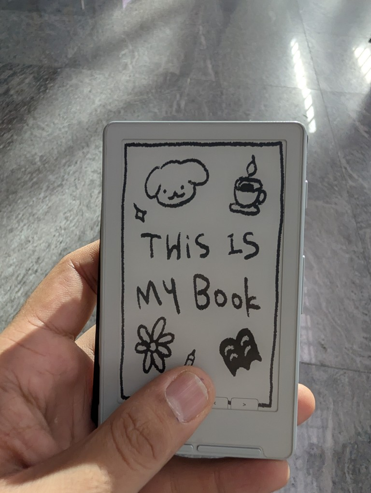
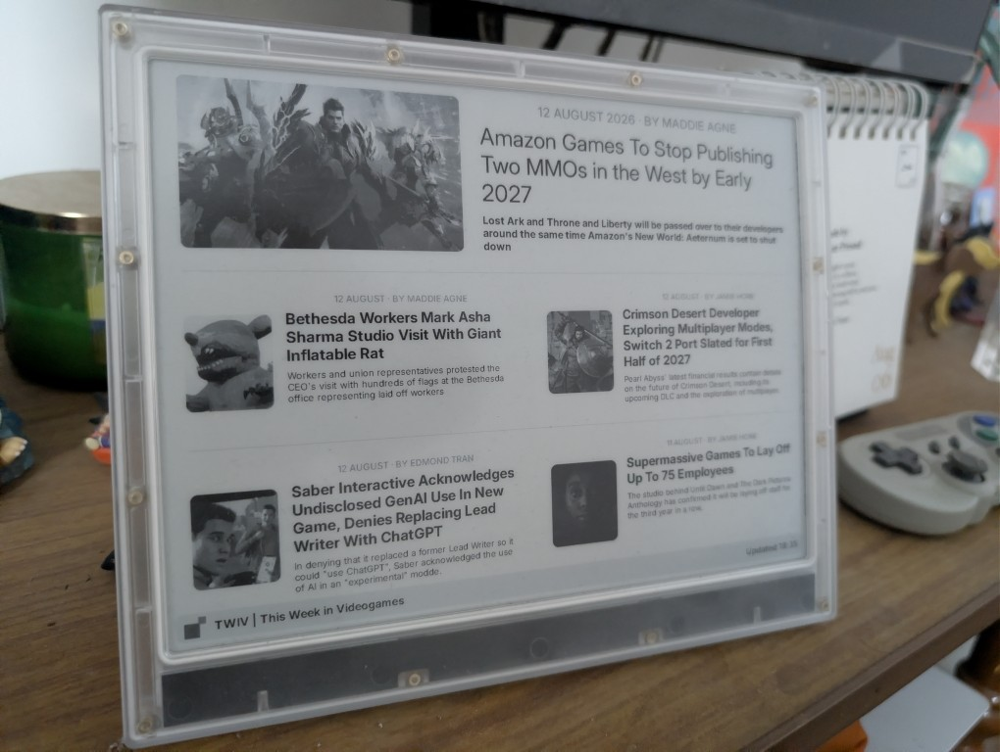
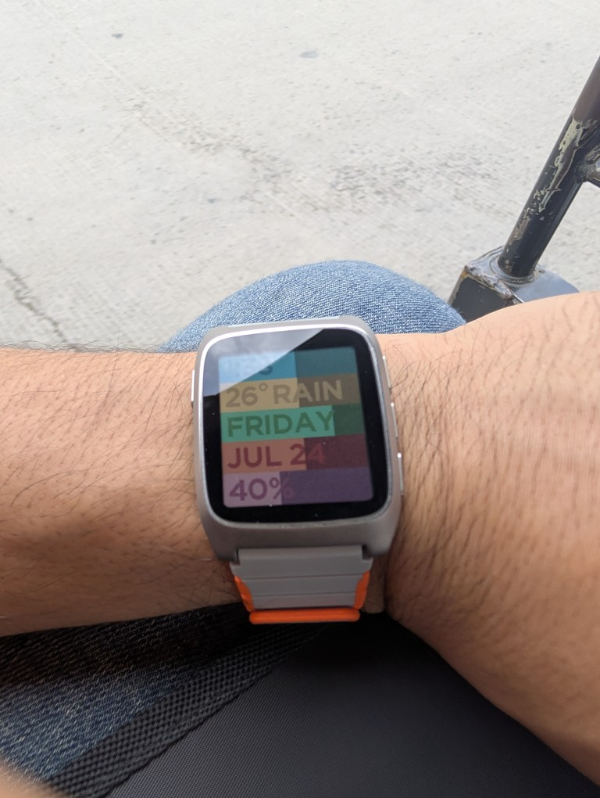

E-Ink'd

XTEink X4.

My review almost matches most of the people on the internet.
Tiny device. Does not fit perfectly on most Magsafe cases.
Although they seem to have improved that on the newer models.
Extremely handy, crisp display with seemingly infinite battery. Honestly. Is it infinite? I will find out.. soon?
Rave reviews from people who've seen me carry it around as a gadget. E-ink still throws people off several times as it still doesn't seem mainstream in daily life.

To note: The sunlight fading issue is a real thing, makes me go a bit - whoa - that can happen? Any way - it's barely a bother.
I love the device.
Imported from Thailand.


Kindle Colorsoft.

Yes. We all know about the muted colours. I like colours. It seems to have a pallete and I guess it works that way. In most other aspects it is like a usual Kindle e-reader.

Handy. Though still not sure how the Amazon walls will close down on this device with time.
Thing to note. Audible does not work in India on Kindle devices.
Brought from DXB.
Bloomin8 photo frame.

I love this device. It's pretty expensive to be honest and I never saw them stock the 5.7" size on their website again after the kickstarter, so I'm not sure if it's actually available anymore.
I set mine to show a quote in the morning and a picture in the evenings. App is reasonably good.

Hardware: Well. I feel the colours might not be AS bright and brilliant as I'd probably like them to be, but it works well to give a printed photo frame effect.
TRMNL X.

Black sheep of the lot. I have a few complaints. No hardware buttons at all.
The reset/flash methods are rather weird (rotating the puck in certain directions over the back) and is unlike anything I've ever seen. Although the transparent back on mine is fun to see and I imagine it's triggering certain switches with the magnetic puck. Any way, I guess some bad hardware decisions under the time constraints the developers seemed to be in.
It is great as a daily overview device. I love getting an RSS feed on the device, as do I like the mashups in the device. I do not like the refresh time, which I'm not sure if it's a server issue or a device issue. Either way, the faster refresh rate is locked behind a paywall and I honestly don't care too much about it either way. What I would have liked though would have been some more control over what gets displayed and to choose to switch over to a different plugin when I want, as well as a faster refresh rate in general. I mean, AFAIK the next screen is supposed to be preloaded, and I'm not quite sure why it doesn't work like that.

Pebble Time 2.

Smartwatch. But not what you'd think of in 2026, really. Let's go back to 2012 or so. When one of the first true smartwatches I ever saw in my life dropped on Kickstarter.
It was the tech dream coming true. I saw a senior wear it at the hospital and remember being jealous and wowed.
But back to the present moment. I've been using the Pixel Watch 2 for the past 3ish years, and apart from their more accurate health tracking - there's nothing I really miss.
This is so much better for notification tracking - for